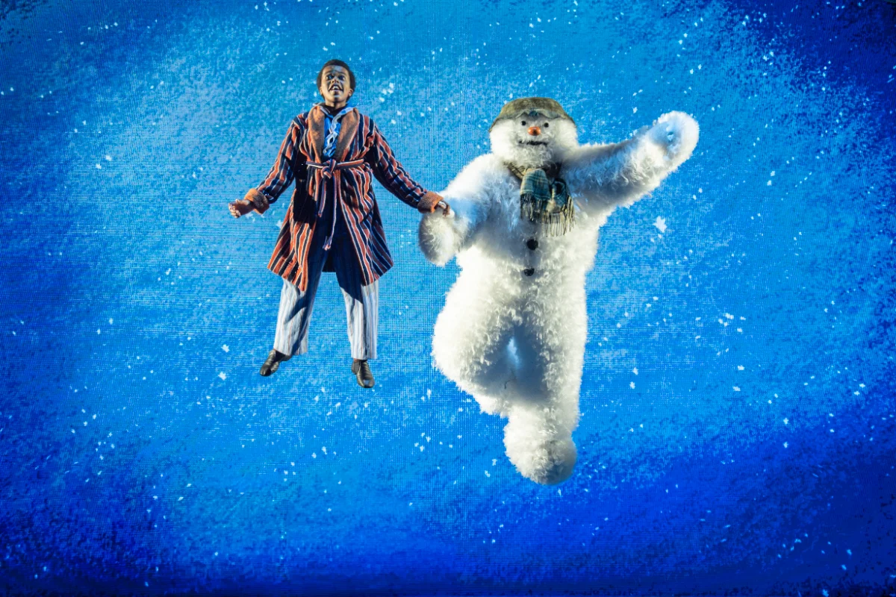

Our Family Verdict
There is something truly magical about returning to a story that has captured hearts and imaginations for generations. A timeless classic that takes you back to the innocence of childhood, evokes memories of Christmases gone by and reminds you of the sheer joy of belief and magic.
The Snowman at Birmingham Rep is a breathtaking, enchanting piece of theatre that invites you to let your imagination take flight. Whatever your age you are transported into a world of winter wonder and friendship.
For 32 years, The Snowman has enchanted theatre audiences, and now this much-loved story has returned home to Birmingham Rep for the world premiere of a spectacular new production. Based on Raymond Briggs’ cherished book and the much-loved animated film directed by Dianne Jackson and produced by John Coates, this brand-new staging is the perfect blend of tradition, nostalgia and technical brilliance.
When a young boy’s snowman magically comes to life, an unforgettable adventure begins. Together, they journey through the night, gliding hand-in-hand across the starlit sky. Along the way, they encounter Father Christmas, friendly reindeer and a joyful gathering of snow people beneath the shimmering Northern Lights, discovering a world filled with wonder, friendship and winter magic.
We watched the production from two entirely different perspectives. I had never seen The Snowman before, while my auntie has watched it countless times over the past 30 years. It was lovely to experience the story together, one discovering the magic for the very first time, the other revisiting something so familiar and treasured.
What struck me most was how gracefully the nostalgia of the original book and film is entwined with subtly renewed moments. It feels warm, familiar and wonderfully recognisable, yet there is a freshness and technical brilliance that makes this production feel entirely its own.
It is pure escapism. From the moment you enter this snowy world, you are whisked away into a landscape filled with woodland animals, mischievous elves, dancing snowmen and the most enchanting winter scenes. There is such a wonderful sense of innocence, joy and happiness woven throughout this relatively short story.
The puppetry was a particular highlight for me, especially the woodland animals. The precision of the movements was extraordinary. The little twitch of a rabbit’s ear, the crouch of a fox peering out from behind the bushes and the way the cat curled its body around the legs of the kitchen table were all executed with such expert attention to detail.
These seemingly tiny movements brought so much personality and life to the characters. It was fascinating to watch, and a real testament to the creativity and craftsmanship behind the production. Puppet design by Daisy Beattie brings an extraordinary level of character and detail to these woodland creatures, making even the smallest movements feel alive.
The mischievous elves and the joyful gathering of party snowmen were equally delightful, adding so much character and playful energy to the dancing.
The Snowman himself, with his instantly recognisable appearance and beautifully designed costume by award-winning designer Tahra Zafar, is instantly loveable. Bringing such an iconic character from page to stage is no small achievement, but he is brought to life in the most charming and magical way. Tahra's design gives this much-loved character a wonderful new stage presence while retaining everything that makes him so familiar. Best known for her recreation of Paddington Bear for the West End, her work here is another wonderful example of bringing an iconic character to life.
The young actor Tate, who played The Boy during our performance, was exceptionally talented. His beautiful smile and wide-eyed expression of wonder captured every emotion without speaking a single word. He conveyed innocence, excitement, curiosity and sheer happiness.
There is something particularly special about telling a story through dance, movement and emotion rather than relying on spoken words. The story unfolds so beautifully through physical performance, allowing every little gesture, expression and movement to communicate what words simply cannot. He was almost never off stage, and his performance was a delight to watch from beginning to end.
During the run, the role of The Boy is shared between four young performers: Tate, Felix, Jake and Tristan.
The magic is in each and every detail. Every element of this production works together so seamlessly. The staging is exceptional, the choreography is gentle and graceful, and the lighting plays a particularly important part in creating the atmosphere and transporting the audience into this magical world.
Directed and choreographed by Olivier Award-winning Will Tuckett, the production has a beautiful sense of movement and fluidity. There is nothing heavy or cumbersome about it. Everything, including the house, seems to glide, twirl and float effortlessly, mirroring the magical world the story creates.
The production design, including both set and costumes, is by multi-award-winning Anna Fleischle. There is such imagination in the way the stage is transformed. The rotating house moves seamlessly between scenes, turning and transforming the stage without ever feeling like a heavy, hardstanding piece of scenery. Instead, it feels wonderfully lightweight as the story moves from one setting to another.
The attention to detail in the set and costumes adds so much to the atmosphere, allowing each scene to flow naturally into the next without interrupting the magic.
It was so lovely to see a Christmas setting that felt simple, genuine and familiar. A small, potted Christmas tree and single gifts for each person. It was a beautiful contrast to the overindulgent, competitive piles of presents that seem to dominate social media these days.
There was something wonderfully nostalgic about all of it. A reminder of a simpler Christmas, of childhood excitement, of the magic that can be found in the smallest things and of how little we really need to create those special memories.
Nina Dunn's video design is another particularly impressive element. The use of video during the flying sequences transports us higher and deeper into this magical land of imagination. As the Snowman and the Boy soar above the stage, the sense of wonder is extended beyond the physical limitations of the stage.
Presented by Birmingham Rep and Sadler's Wells, this production brings together an extraordinarily talented creative team. It is a production where every detail has been considered, and it shows.
Of course, no retelling of The Snowman would be complete without Howard Blake's unforgettable and much-loved musical score. The music is magical throughout, and watching the production accompanied by a live orchestra makes the experience even more special.
The famous flying sequence is breathtaking. Watching the Boy and the Snowman soar above the stage, accompanied by that iconic music, is a moment of pure theatre magic. It was a moment that genuinely brought a tear to my eye.
The audience was weighted heavily towards adults, yet when that final scene arrived, the entire auditorium gasped out loud, despite knowing the inevitable ending. It was quite something to witness. A testament to the story's extraordinary ability to speak to the child inside all of us, regardless of age or how many times we have seen it before.
Another moment that caught me unexpectedly was when the Snowman turns and blinks at the Boy before he walks back into the house. Such a tiny gesture, but one that made a lump rise in my throat, long before the heartbreak we knew the morning sunrise would bring.
Whether you are discovering The Snowman for the very first time or returning to a story you have loved for decades, there is something here for everyone.
It is warm, familiar, beautiful and enchanting. A charming production that offers a delightful opportunity to step away from the everyday world and immerse yourself in something genuinely magical.
A truly magical and enchanting escape back to childhood nostalgia.
Catch The Snowman before he flies away!
Birmingham performances must end on Sunday 1 November before the show transfers to London's West End Peacock Theatre for the festive season.
Photo © Johan Persson. Production Design: Anna Fleischle
Production Gallery
Sensory Strategies & Parent Insights
Gentle Lighting Transitions: The production utilizes atmospheric lighting designed by a multi-award-winning creative team to transition smoothly between snowy wonderlands and cosy indoor settings without harsh strobe effects.
Orchestral Score: Accompanied by a live orchestra playing Howard Blake's iconic score. Families sensitive to live brass or strings can prepare young attendees using the soundtrack ahead of time.
Non-Verbal Storytelling: Because the story is told entirely through dance, movement, and physical expression rather than spoken dialogue, it is exceptionally accessible for young children, non-verbal attendees, and neurodivergent viewers who respond well to visual narratives.